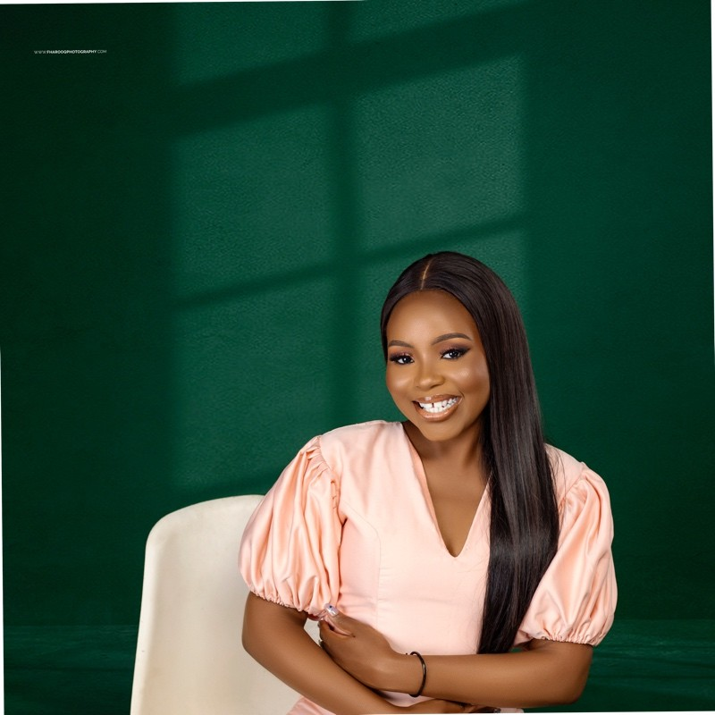

01 ↗
Research &
market intelligence
Uncovering market dynamics, customer needs and policy developments to inform opportunity assessment and strategic choices.
I’m Fatimah Adebowale. I turn research, market intelligence and financial insight into decisions that move businesses forward.

The best decisions connect what the evidence says with what a business needs to achieve.
I work at the intersection of research, business strategy and finance—helping teams understand their markets, evaluate opportunities and build a clearer path to growth. My experience spans real estate, strategic advisory, policy research and organisational development.
From leading research teams to developing feasibility studies and financial models, I bring a multidisciplinary perspective to questions that rarely fit neatly into one discipline.
Three complementary strengths, connected by one purpose: turning insight into practical business direction.
Uncovering market dynamics, customer needs and policy developments to inform opportunity assessment and strategic choices.
Connecting market evidence with business development, partnerships and operational improvements that support growth.
Bringing financial clarity to planning through forecasting, modelling, performance reporting and investment evaluation.
Selected contributions from my work in real estate research and business development.
Led market and customer research, financial feasibility studies and executive intelligence reporting to support property acquisition, pricing and project planning.
Directed cross-functional projects, strengthened strategic partnerships and introduced processes that connected business development with operational delivery.
Three directions for future analytical work, reflecting my interests in markets, business performance and public policy. These are placeholder concepts; analyses and dashboards are forthcoming.
A proposed exploration of property prices, location characteristics and housing demand to understand how value differs across neighbourhoods.
A proposed performance dashboard connecting sales, customer segments and costs to explore what drives sustainable profitability.
A proposed study of education access across regions and population groups, examining disparities that national averages can conceal.
Osun State University · 2021
Top 2% of the faculty
A foundation in research methods, policy analysis and international relations, strengthened by practical business and analytical experience.
Additional volunteer experience in data and business analysis, business development and remote project management.
Let’s talk about research, business strategy and the opportunities that thoughtful analysis can unlock.